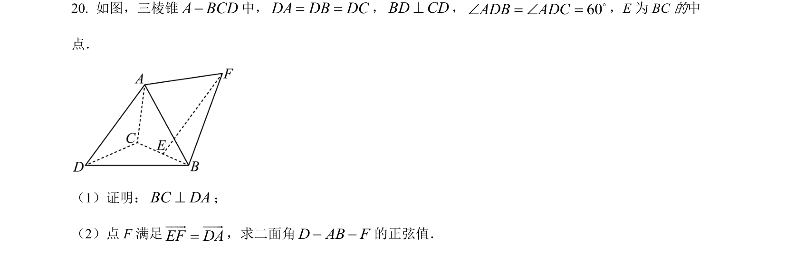
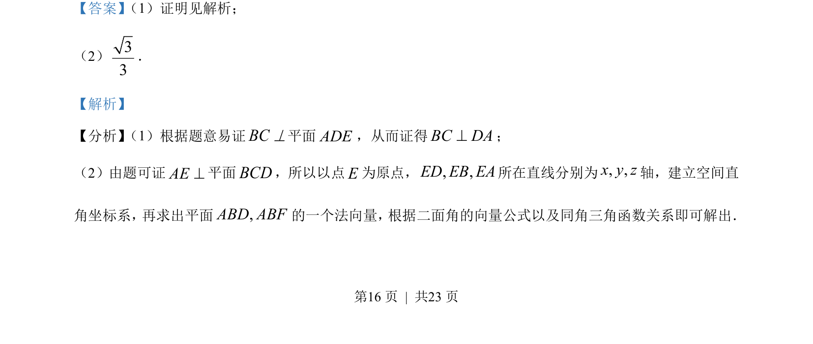
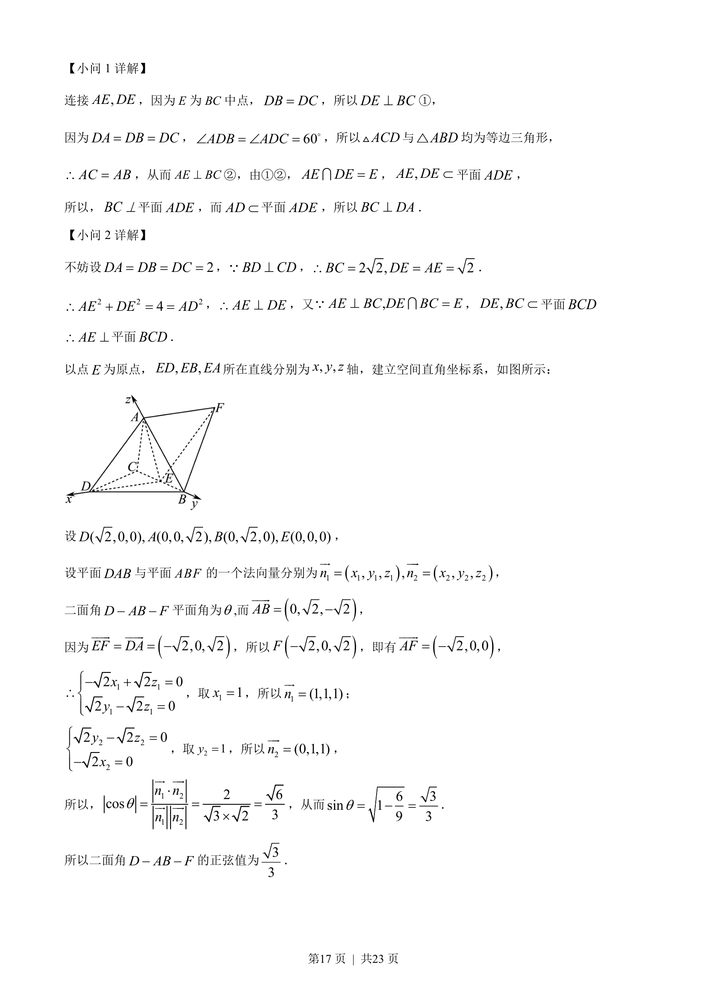

考点：线面垂直 空间直角坐标系 二面角的向量求法

本题考查线线垂直证明及利用空间向量求二面角的正弦值。


📄 原 PDF 第 16 页：
素材/真题/吉林/2008-2024·（吉林）数学高考真题/2023年高考数学试卷（新课标Ⅱ卷）（解析卷）.pdf
（1）证明：BC DA^； （2）点 F满足EFDA=υυυrυυυr ，求二面角D AB F− −的正弦值．
【答案】 （1）证明见解析；
（2）33
．
【解析】
【分析】 （1）根据题意易证BC^平面ADE，从而证得BC DA^；
（2）由题可证^AE平面BCD，所以以点E为原点，, ,ED EB EA所在直线分别为, ,x y z轴，建立空间直
角坐标系， 再求出平面,ABD ABF的一个法向量， 根据二面角的向量公式以及同角三角函数关系即可解出．